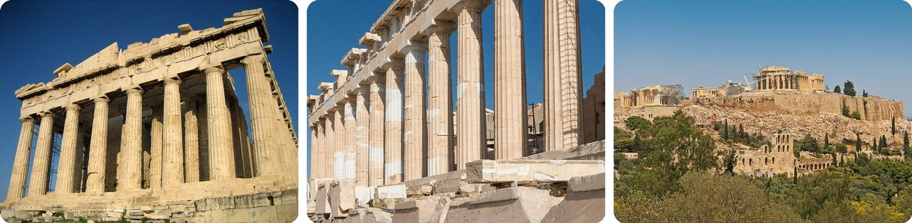
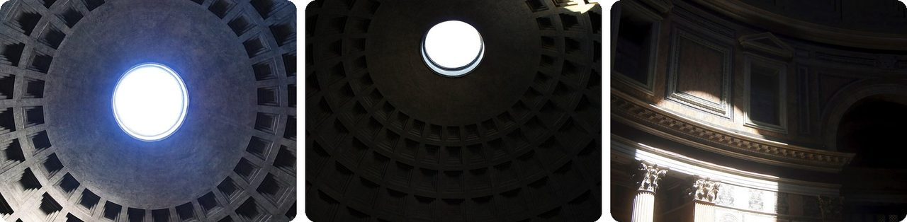
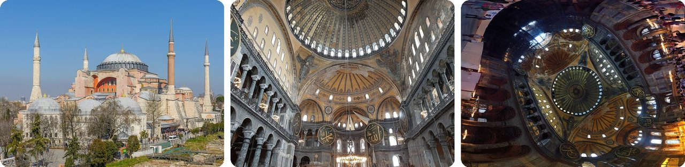
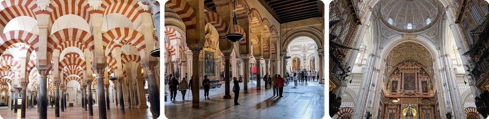
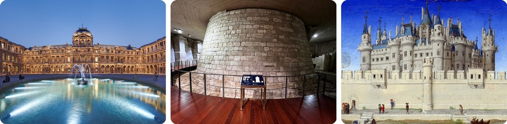
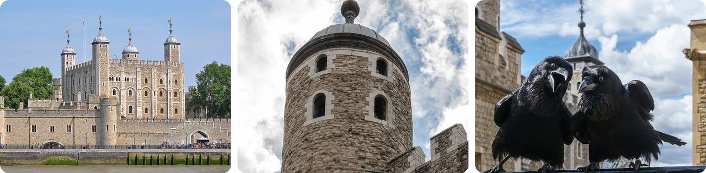
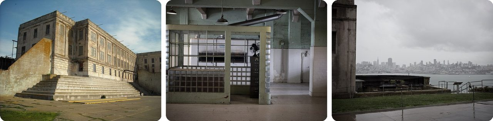
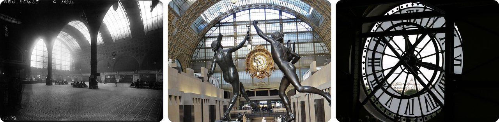
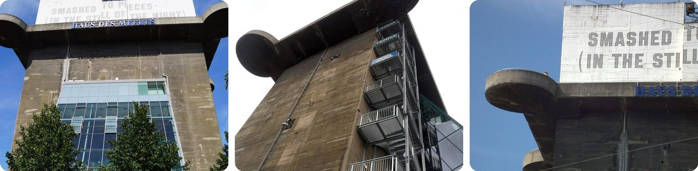
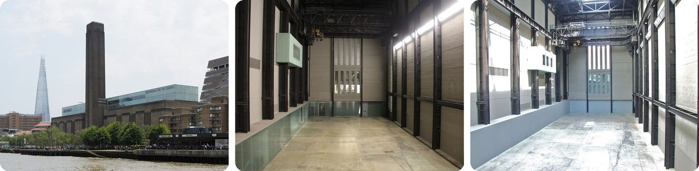

🌍 Top 10 Edificios famosos que cambiaron por completo de uso
12 de noviembre de 2026
1. 🇬🇷 El Partenón fue templo, iglesia, mezquita y polvorín

El Partenón de Atenas se construyó como templo de la diosa Atenea. Hace unos 1.500 años se volvió una iglesia dedicada a la Virgen María, y los constructores le dieron la vuelta: la puerta principal pasó al lado oeste para que el altar quedara mirando al este.Después de que los otomanos tomaron Atenas en el siglo XV, se volvió mezquita, y un viejo campanario de adentro se alargó hasta convertirse en minarete (la torre desde donde se llama a rezar).
Luego vino el peor trabajo de todos. Los otomanos lo usaron para guardar pólvora y municiones, y durante un asedio en 1687 una bomba veneciana cayó encima. La explosión destrozó el edificio, y por eso hoy es una ruina.
Aguantó 2.000 años de remodelaciones y terminó destruido por usarse como bodega.
2. 🇮🇹 Volverse iglesia salvó al Panteón de Roma

El Panteón era un templo romano para todos los dioses. El 13 de mayo de 609, el emperador se lo dio al papa Bonifacio IV, que lo convirtió en iglesia.Ese nuevo trabajo lo salvó. La mayoría de los edificios de la antigua Roma se abandonaron, se tiraron o se desarmaron para sacarles materiales, pero el Panteón siguió en uso, así que la gente lo siguió cuidando. Aun así lo robaron una vez: en 663, un emperador le quitó las tejas de bronce del techo y se las llevó a Constantinopla.
Hoy sigue siendo la cúpula de concreto sin varillas de acero más grande del mundo. Es exactamente igual de alto que de ancho, 43 metros (142 pies), más o menos como un edificio de 14 pisos.
En pocas palabras, tener trabajo lo mantuvo vivo.
3. 🇹🇷 Santa Sofía ha cambiado de trabajo cuatro veces

Santa Sofía, en Estambul, se terminó en 537 como iglesia cristiana, construida en solo cinco años. Fue la iglesia más grande del mundo durante más de 500 años.Cuando los otomanos conquistaron la ciudad en 1453, el sultán Mehmed II ordenó convertirla en mezquita de inmediato. Siguió siendo mezquita casi 500 años.
En 1931 cerró durante cuatro años, y en 1935 reabrió como museo. En 2020, un tribunal turco anuló esa decisión y volvió a ser mezquita.
Piénsalo como un edificio al que le siguen cambiando el gafete.
4. 🇪🇸 Córdoba tiene una catedral construida en medio de una mezquita

La Gran Mezquita de Córdoba, en España, se empezó en 785 y se agrandó una y otra vez, hasta volverse un enorme bosque de arcos.En 1236, el rey Fernando III de Castilla tomó la ciudad y convirtió la mezquita en catedral, dejándola casi igual. Pero en 1523, un obispo empezó a construir una iglesia completamente nueva justo en medio, aunque el ayuntamiento se opuso.
El rey Carlos V dio permiso. Pero cuando después vio el resultado, dicen que se quejó: "Ustedes construyeron lo que ustedes o cualquiera podría haber construido en cualquier parte; para hacerlo destruyeron algo que era único en el mundo".
Es como construir una casa adentro de otra casa.
5. 🇫🇷 El Louvre empezó como fortaleza

En 1190, el rey Felipe II de Francia estaba por irse a una Cruzada. Antes de partir, mandó construir una muralla alrededor de París y una fortaleza, el Louvre, para cuidarla del lado del río.En los siglos siguientes, los reyes lo tiraron y lo reconstruyeron hasta hacerlo un palacio gigante, y vivieron ahí de vez en cuando hasta el siglo XVIII. En 1793 abrió como museo.
El viejo castillo nunca se fue del todo. Sus restos se desenterraron entre 1983 y 1985, y hoy están en exhibición bajo tierra, debajo del museo.
O sea, el arte está encima de un castillo.
6. 🏴 La Torre de Londres fue palacio, zoológico, casa de moneda y cárcel

La Torre de Londres se empezó en 1066 como castillo. Desde entonces ha sido arsenal, tesoro, zoológico real, el lugar donde se hacían las monedas de Inglaterra, archivo y la casa de las Joyas de la Corona.Es más famosa como cárcel, y de ahí viene la frase inglesa "mandado a la Torre". Pero solo siete personas fueron ejecutadas dentro de sus muros antes de las guerras mundiales del siglo XX. La mayoría de las ejecuciones fueron en la colina de afuera.
Su último prisionero de Estado fue Rudolf Hess, el segundo de Hitler, que estuvo ahí solo cuatro días en 1941.
Piénsalo como un castillo que ha sido zoológico, banco y cárcel.
7. 🇺🇸 Alcatraz fue fuerte antes que prisión

Alcatraz es una islita en la bahía de San Francisco, de unos 22 acres, más o menos el tamaño de 17 campos de fútbol americano. El ejército de Estados Unidos la fortificó en la década de 1850, y para 1866 tenía 105 cañones apuntando a la bahía.El ejército también la usó como prisión militar. En 1934 se volvió prisión federal, donde las corrientes fuertes y el agua fría hacían casi imposible escapar. Cerró el 21 de marzo de 1963.
Luego, en noviembre de 1969, un grupo de indígenas estadounidenses ocupó la isla y se quedó más de 19 meses. Su faro sigue siendo el más antiguo en funcionamiento de la costa oeste de Estados Unidos.
O sea, pasó de dejar a los enemigos afuera a dejar a los presos adentro.
8. 🇫🇷 El Museo de Orsay era una estación de tren

El Museo de Orsay, en París, se construyó como la Gare d'Orsay, una estación de tren terminada a tiempo para la Exposición Universal de 1900.Para 1970 ya estaba aprobado tirarla, y en su lugar se planeaba un hotel. Pero el ministro de Cultura de Francia frenó el hotel, y la estación quedó protegida como monumento histórico en 1978.
Abrió como museo de arte en diciembre de 1986. Solo colgar unas 2.000 pinturas y acomodar 600 esculturas en el viejo vestíbulo de trenes tomó seis meses.
Se fueron los trenes, llegaron los Van Gogh.
9. 🇦🇹 Una torre antiaérea nazi en Viena ahora es un acuario

Durante la Segunda Guerra Mundial, Alemania construyó enormes torres antiaéreas de concreto (torres para cañones contra aviones). Una en Viena se levantó en solo 10 meses, en 1943–44. Mide 47 metros (154 pies), como un edificio de 15 pisos, y tiene un pozo de concreto con muros de 3,5 metros (11 pies) de grosor donde el radar podía esconderse durante los bombardeos.En 1957 se mudaron unos voluntarios del acuario. Al principio la compartían con bomberos y solo tenían piso y medio útil, así que fueron ocupando los pisos vacíos uno por uno. Hoy el Haus des Meeres tiene más de 10.000 animales marinos.
Cuando se construyó un nuevo tanque de tiburones en 2007, su grava se hizo con concreto viejo de la guerra arrancado de la torre.
Es un búnker de guerra convertido en una pecera gigante.
10. 🏴 La Tate Modern es una central eléctrica que todavía tiene electricidad adentro

La Tate Modern, en Londres, era la central eléctrica de Bankside, construida entre 1947 y 1963 con una chimenea de 99 metros (325 pies). Cerró en 1981 y casi la tiran.En 2000 reabrió como galería de arte. La gigantesca Sala de Turbinas, donde antes estaban las máquinas, se volvió sala de exposiciones, y su grúa del techo sigue ahí. Una parte del edificio todavía es una subestación eléctrica que funciona, propiedad de una compañía de electricidad.
Recibió 5,25 millones de visitantes en su primer año, más del doble de los 2,5 millones que las otras tres galerías Tate tuvieron juntas el año anterior.
Es una galería de arte que comparte techo con una planta de luz.
Dato curioso
Alemania construyó ocho complejos de torres antiaéreas en Berlín, Hamburgo y Viena. Después de la guerra, tirar muchas de ellas resultó demasiado difícil. En Berlín, los británicos necesitaron dos intentos y varias toneladas de explosivos para volar una torre en 1947, y muchas otras siguen en pie. Las enormes construcciones de guerra que eran demasiado duras para destruir, y lo que las ciudades hicieron con ellas, podrían ser todo un tema nuevo para explorar.
Créditos de las fotos (Wikimedia Commons)
- #1: Parthenon from west.jpg by User:Mountain, Public domain
- #1: Colonnade Parthenon Acropolis, Athens, Greece.jpg by Jebulon, CC0
- #1: Attica 06-13 Athens 50 View from Philopappos - Acropolis Hill.jpg by A.Savin, CC BY-SA 3.0
- #2: Interior oculus of the Rome Pantheon.jpg by T. Le Berre, CC BY-SA 4.0
- #2: Pantheon (Rome) - Interior 01.jpg by John Samuel, CC BY-SA 4.0
- #2: Light from the Pantheon oculus, Rome (1).jpg by Quentin Lowagie / Klow, CC BY 4.0
- #3: Hagia Sophia Mars 2013.jpg by Arild Vågen, CC BY-SA 3.0
- #3: Interior of Hagia Sophia (7) - Istanbul (2022).jpg by ImanFakhri, CC BY-SA 4.0
- #3: Hagia Sophia Interior Panorama.jpg by Ronan Reinart, CC BY-SA 3.0
- #4: Naves de Almanzor - Mezquita de Córdoba.jpg by Paul Asman and Jill Lenoble, CC BY 2.0
- #4: Córdoba. Mezquita-catedral.jpg by 3Félix, CC BY 4.0
- #4: Mezquita-catedral de Córdoba interior 13.jpg by kallerna, CC BY-SA 4.0
- #5: Louvre Cour Carree.jpg by Benh LIEU SONG, CC BY-SA 3.0
- #5: Louvre medieval foundations (287).jpg by Onceinawhile, CC BY-SA 4.0
- #5: Louvre - Les Très Riches Heures.jpg by Limbourg brothers / Barthélemy d'Eyck, Public domain
- #6: Tower of London viewed from the River Thames.jpg by Bob Collowan, CC BY-SA 3.0
- #6: London, Tower of London, White Tower -- 2016 -- 4679.jpg by Dietmar Rabich, CC BY-SA 4.0
- #6: Jubilee and Munin, Ravens, Tower of London 2016-04-30.jpg by Colin, CC BY-SA 4.0
- #7: Alcatraz - Main Cellhouse (4409210917).jpg by Daniel Ramirez from Honolulu, USA, CC BY 2.0
- #7: Alcatraz Island (6870499014).jpg by HarshLight from San Jose, CA, USA, CC BY 2.0
- #7: Alcatraz Island (7016575061).jpg by HarshLight from San Jose, CA, USA, CC BY 2.0
- #8: Gare d'Orsay vue générale du hall.jpg by Agence de presse Meurisse. Agence photographique (commanditaire), Public domain
- #8: Grande galerie du Musée d'Orsay (1).jpg by Ibex73, CC BY-SA 4.0
- #8: Paris - Musée d'Orsay - big clock seen from the interior.jpg by Roman Eisele, CC BY-SA 4.0
- #9: Flakturm Haus des Meeres.JPG by Admin1, CC BY-SA 3.0
- #9: S03 729 Flakturm V.jpg by Falk2, CC BY-SA 4.0
- #9: Flakturm Esterhazypark Wien 004.jpg by DALIBRI, CC BY-SA 3.0
- #10: Tate Modern London June 2016.jpg by King of Hearts, CC BY-SA 4.0
- #10: The Tate Modern Turbine Hall - 2012-12-28.jpg by Daniel X. O'Neil, CC BY 2.0
- #10: The Turbine Hall, Tate Modern - geograph.org.uk - 2524607.jpg by Chris Whippet, CC BY-SA 2.0


_-_Interior_01.jpg){kind=link}
.jpg){kind=link}

_-_Istanbul_(2022).jpg){kind=link}


.jpg){kind=link}


.jpg){kind=link}
.jpg){kind=link}
.jpg){kind=link}

.jpg){kind=link}